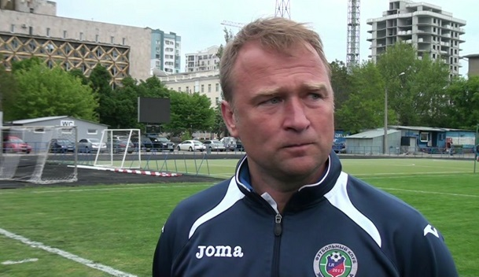
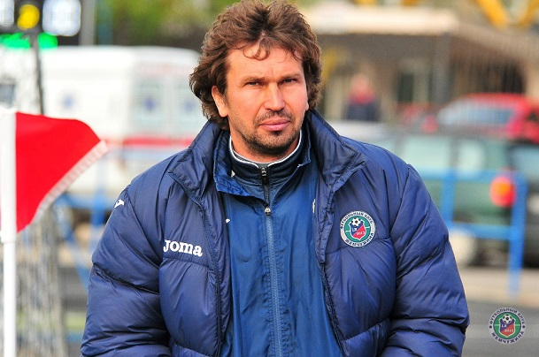
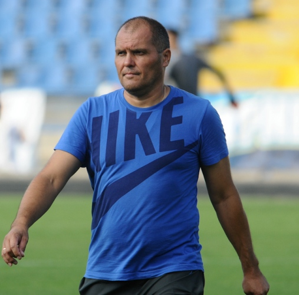
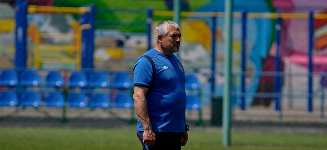

Жемчужина
Футбольный клуб
Турнирная Доска
1 Арсенал
Арсенал
2 Полтава
Полтава
3 Ингулец
Ингулец
4 Колос
Колос
5 Десна
Десна
6 Гелиос
Гелиос
7 Авангард
Авангард
8 Горняк-Спорт
Горняк-Спорт
9 Рух
Рух
10 Оболонь-Бровар
Оболонь-Бровар
11 Балканы
Балканы
12 МФК Николаев
МФК Николаев
13 Жемчужина
Жемчужина
14 Кремень
Кремень
15 Нефтяник-Укрнефть
Нефтяник-Укрнефть
16 ПФК Сумы
ПФК Сумы
17 Волынь
Волынь
18 Черкасский Днепр
Черкасский Днепр
Горбатенко Дмитрий Георгиевич (Тренер)

Родился 17 мая 1973 года
Воспитанник ДЮСШ-6 города Одесса. Выступал за дубль одесского «Черноморца», позднее за херсонскую «Таврию». Весной 1994 года перешёл в полтавскую «Ворсклу», игравшую тогда в Первой лиге.
Летом 1994 года Дмитрий Горбатенко перешёл в «КАМАЗ». Первый матч в российской Высшей лиге он сыграл 10 августа 1994 года против московского «Динамо» (1:2). Всего до конца сезона он 3 раза вышел на поле в составе «КАМАЗа», а в следующем сезоне сыграл 11 матчей.
Следующим клубом Дмитрия Горбатенко стал «Нефтехимик», затем он играл за астраханский «Волгарь-Газпром», а сезон 1996/97 провёл в украинском «Портовике». В течение трёх следующих сезонов Горбатенко играл за иркутскую «Звезду», затем два сезона за читинский «Локомотив».
В 2002 году Дмитрий Горбатенко вернулся в Украину, недолго выступал за профессиональные клубы — ФК «Николаев» и ФК «Черкассы» и сменил несколько любительских клубов — «КАПО» (Первомайское), «Локомотив-Дружба народов» (Одесса), «Иван» (Одесса), ФК «Беляевка».
После окончания карьеры игрока Дмитрий Горбатенко тренировал любительскую команду «Дружба народов», а с 2009 года работал тренером в ДЮСШ «Черноморец» (Одесса).
В Жемчужине с 2013 года.
Долганский Сергей Николаевич (Тренер)

Родился 15 сентября 1974 года в Здолбунове, Ровненской области.
<
Защищал ворота следующих клубов:
Верес (Ровно), Металлист (Харьков), Черноморец (Одесса), Кривбасс (Кривой Рог), ЦСКА (Киев), Система-Борэкс (Киев), Шахтер (Донецк), Металлург (Донецк), Ворскла (Полтава).
Сыграл 6 матчей за молодежную сборную Украины.
Достижения:
Чемпион Украины 2001/2002
Обладатель Кубка Украины 2001/2002, 2008/2009
Кулик Константин Анатольевич (Администратор)

Родился 14 июня 1970 года в Одессе.
Воспитанник СДЮШОР «Черноморец»
Выступал за:
«Тигина-РШВСМ» Бендеры, «Нистру» Кишинев, «Кяпаз» Гянджа, СКА Одесса, «Нефтчи» Баку, "Черноморец" Одесса, «Ротор» Волгоград, Россия, «Динамо» Ставрополь, Россия, «Металлург» Липецк, Россия, «Зимбру» Кишинев, Молдавия, «Черноморец-2» Одесса, «Днестр» Овидиополь,
Работал администратором в: «Днестр» Овидиополь, ФК «Одесса»
В команде с марта 2017 года.
Вознюк Василий Степанович (Врач)

Родился 1.02.1968 года в Хмельницкой области.
Закончил Хмельницкое медицинское училище (1987)
Закончил ОГМУ в 1997 году.
В период с 1989 по 2003 годы работал в различных медицинских учреждениях Хмельницкого и Одессы.
Получил сертификат «Врач спортивной медицины» на базе Киевской медицинской академии последипломного образования им. П. Л. Шупика.
В команде с февраля 2017 года.
©2017
Проект был созданОпрей Николаем